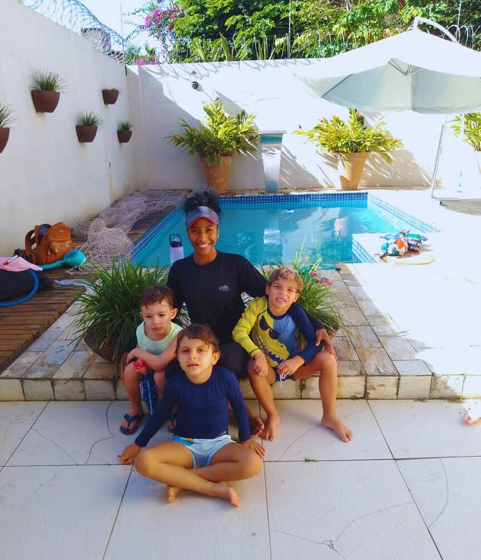
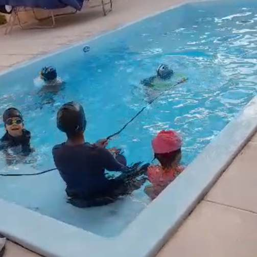
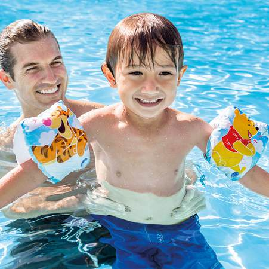
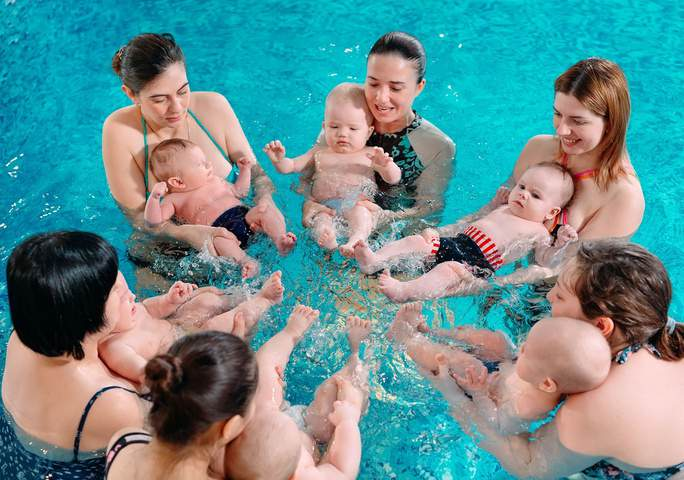
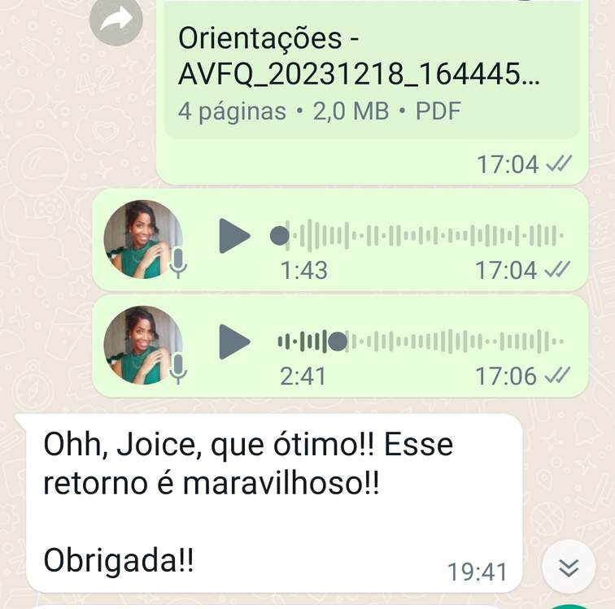
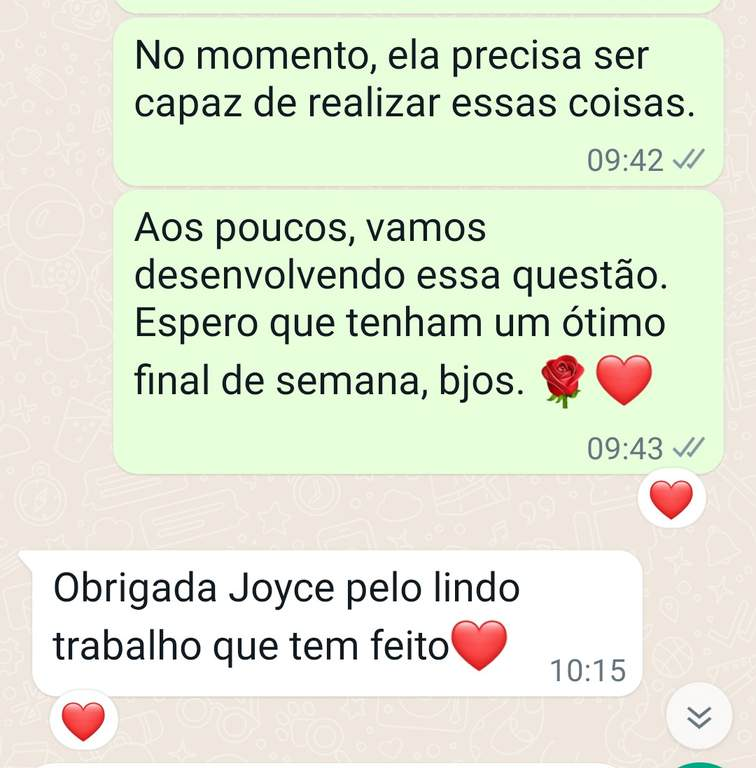
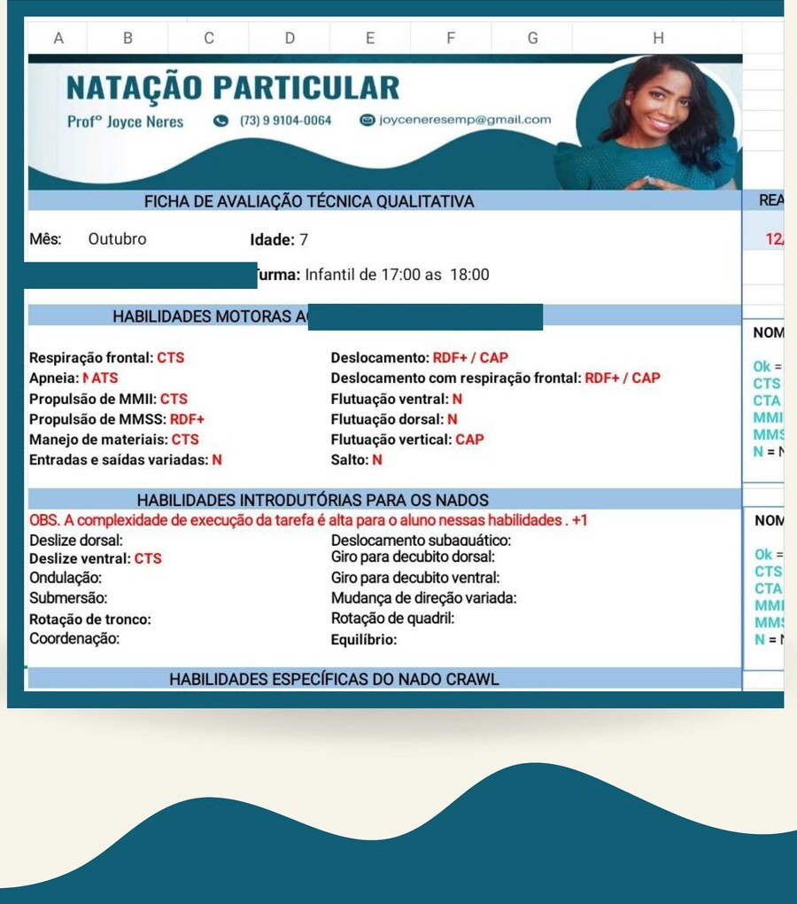

Seu filho com maior segurança na água.
Aulas particulares de natação infantil, turmas reduzidas e foco em sobrevivência aquática.
Chamar no WhatsApp@joyceneresef




Profª Joyce Neres · CREF/BA-022609
Sou Joyce, uma professora de Educação Física APAIXONADA pelo movimento humano e pela necessidade básica de SOBREVIVÊNCIA, seja na natação ou em qualquer ação de cuidados com a saúde.
CREF/BA-022609
Nesta página você verá informações sobre:
O valor da natação
Dessa forma, a natação é uma maneira de preservar a vida, sendo indispensável o aprendizado desde a infância.
Objetivo do trabalho
Sobrevivência como prioridade
O foco não é direcionado ao treinamento desportivo e competitivo. Ainda assim, na minha prática, não limito a criança a esse tipo de aprendizado quando há evolução e interesse. O objetivo primário do meu trabalho é a sobrevivência, exclusivamente.
Público prioritário
- Crianças a partir de 3 anos de idade.
- Prioridade à crianças a partir de 5 anos.
- Exceção conforme nível de desempenho e aceitação às aulas.
Limite de alunos
Turmas a partir de 2 alunos, com limite máximo de 4 alunos para melhor acompanhamento. Dependendo da turma, mais alunos poderão ser inclusos.
Exceção de público (1 ano e meio a 3 anos)
- Tempo de aula: até 30 min.
- Responsável disponível para entrar na piscina com a criança.
- Máximo 4 alunos.
- Ficha individual limitada à adaptação aquática e psicomotricidade.
Bônus do acompanhamento particular
Durante o acompanhamento, você recebe feedbacks quinzenais, via WhatsApp.


Ficha individual em planilha
Além disso, uma ficha de avaliação individual em planilha de Excel, com considerações específicas sobre o desenvolvimento do seu filho.

Pacote de aulas — mensal ou semestral (renovação em março e setembro)
WhatsApp — (73) 99104-0064Material inicial necessário
* Bóia se não alcançar o chão, ou apresentar trauma ou medo excessivo da água.
Joyce Neres
Professora de Educação Física, natação infantil e acompanhamento com foco em segurança na água e desenvolvimento motor no meio aquático.
CREF/BA-022609 · @joyceneresef · (73) 99104-0064
Gratidão pelo contato!
Em caso de dúvidas, entre em contato novamente. Será um prazer orientar você sobre o próximo passo na natação do seu filho.
(73) 99104-0064 — WhatsApp